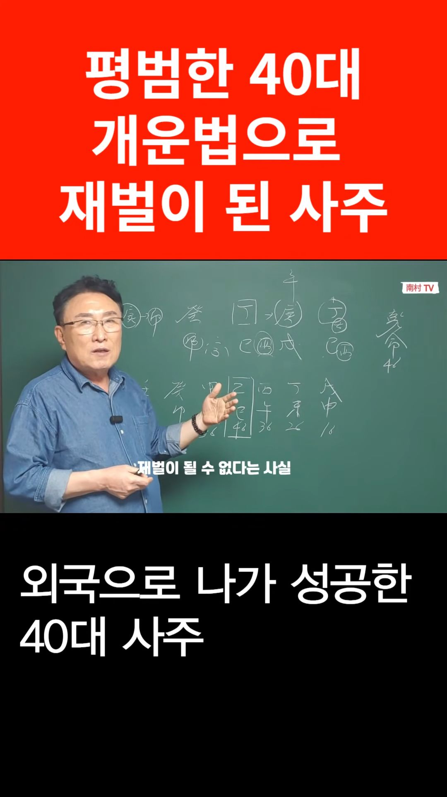

남촌물상TV 전체 문서 › Shorts S0023
평범한 40대 개운법으로 재벌이 된 사주

| 문서 번호 | S0023 (Shorts (쇼츠)) |
|---|---|
| 영상 URL | https://www.youtube.com/watch?v=iwVd3k1SIA0 |
| 영상 ID | iwVd3k1SIA0 |
| 게시일 | 2023-10-05 |
| 길이 | 0:45 (45초) |
| 조회수 | 1,339회 (수집 시점 기준) |
| 카테고리 | People & Blogs |
| 자막 | ko (자동생성) |
| 수집 시각 | 2026-08-30 17:03 (KST) |
영상 설명 (YouTube 설명 원문 그대로)
외국으로 나가 개운법으로 성공한 평범했던 40대 사주 #물상론 #개운법 #정임합 #재벌사주
전체 자막 (18구간 · 타임스탬프 클릭 시 해당 장면으로 이동)
[0:00]자 그랬을 때 이분이 성공하는
[0:03]방법은이 10년 안에
[0:05]꿈이 이루어진 것이이
[0:07]46대 와서
[0:09]55세 사이에 10년 동안에
[0:12]준 재벌이 될 수 있는 사주가 여기서
[0:15]탄생한다 이것이 묵상 핵심적이에요
[0:19]국내에서 아무리 자 여기 고정으로
[0:22]풀어서이 사람 준 재벌 사준가
[0:24]아닙니다
[0:26]해외에서 나가서 버려야 돈이이 사람
[0:29]준 재벌이 된 것이지
[0:31]국내에서 pd로 활동할 수 있는 돈은
[0:34]절대 재벌이 될 수 없다는 사실
[0:36]이래서 우리 물상군에서는 해외를 가라
[0:39]어느 때 해외가 손을 뭘 하면 좋다는
[0:41]것을 개헌법을 확실하게 말씀을
[0:45]드린다이
칠판 원국 판독 (영상 프레임을 AI가 시각 판독 · 원판 대조 필수)
乾造
천간
壬
천간
丁
천간
戊
천간
丁
지지
寅
지지
亥
지지
申
지지
卯
판독 신뢰도: 중간
판독 노트: 40대 재벌 사주 쇼츠, 乾命 40세 추정, 대운 戊申16→癸卯66 역행 중 乙巳46 궁, 亥 귀인 원 · 시점 0:36 · 해당 장면 보기↗
자막은 YouTube에서 제공하는 한국어 자동음성인식(ASR) 트랙의 원문입니다. 고유명사·한자 용어·숫자 표기에 자동인식 특유의 오류가 있을 수 있어, 원문을 가능한 한 그대로 보존했습니다. 위에 칠판 원국 판독 섹션이 있는 영상은 화면 프레임을 AI가 시각 판독한 것으로 신뢰도 표기를 확인하고, 없는 영상은 화면 도표가 문서에 포함되지 않습니다.